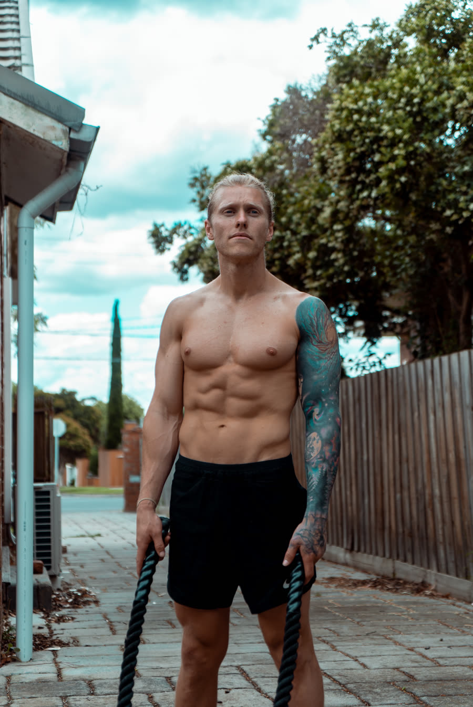

B
Small wins count
Got my session done before work. Nearly talked myself out of it too.
Your training, food and support, together in Balance. A ten-week challenge for vegetarians and plant-based eaters who want to build strength, feel more confident and find a routine they can keep.
Your workout program, plant-based meal plans, community and the complete six-week Balance Learn course, with coaching support from Shannon.
Book a consultationTen weeks of training, food and lasting habits. Choose your support with Shannon before you commit.
45 min · strength
One practical action
Got my session done before work. Nearly talked myself out of it too.
Your workouts, meals, Weekly Goals and community stay in one place. Follow your plan, log the small wins and work through Balance Learn alongside your ten-week challenge.
Swipe to explore. Tap a screen for a closer look.


Train where you are, with what you have.
Plant-based meals that fit your goals and your day.


Example meals. Your meals follow the eating style and preferences you choose.
Meals built around vegetables, legumes, tofu, whole grains, nuts and seeds.
Meat-free meals, with eggs and dairy as options if they fit the way you eat.
Gluten-free and dairy-free preferences are available during setup.
Stay connected through the Balance community and agree on the right level of personal coaching with Shannon.
Complete the weekly check-in form in the app. Share your wins, what got in the way, how confident you feel and where you need support.
I review your answers alongside the workouts, food, sleep and progress you have logged, plus your weekly goals and recent messages.
You receive feedback through Balance, with practical next steps and adjustments to your training or food plan where needed. You can ask questions in the app too.
Shannon reviews your workouts, meal plan, Learn progress and how your week is going. Choose online coaching or add one live Zoom training session each week.
Balance Learn is included. Its six-week course helps you understand your habits and put practical changes into action. The course sits inside the challenge: learn as you train, then spend the remaining four weeks making the routine your own.
Weeks 1–6: learn and practise. Work through Balance Learn alongside your workouts, plant-based meals and weekly goals.
Weeks 7–10: keep it going. Continue your training and food routine, revisit what helped and plan what you want to carry forward.

I'm an exercise scientist and former gym owner. I've worked with hundreds of clients. Some changed their lives. Others struggled to make it stick. That left me wondering why. Was it really about being lazy or trying harder, or was something deeper going on?
Studying neuroscience led me to look more closely at the habits and automatic responses that shape our everyday choices. I built Balance to help people understand that “autopilot” and practise making changes in their own lives.
The ten-week Plant-Based Summer Shred brings training, food and accountability together. Balance Learn is included to help you understand the habits behind the work, with practical actions and support from me.
It's more than a meal plan or workout program. It's knowledge you can put to work, with guidance as you practise. The aim is to build skills you can keep using long after these ten weeks.
The Plant-Based Challenge runs for ten weeks. Balance Learn is a six-week course included within it. In weeks seven to ten, keep applying what you have learned to your workouts, meals and everyday routine.
No. Vegetarians, plant-based eaters and people moving towards more plant-based eating are welcome. We will talk about how you eat, your preferences and your goals so your meal support fits you.
Yes. Your training can fit a full gym, dumbbells at home, bodyweight sessions or resistance bands. Balance also includes yoga, recovery and mobility.
Online coaching is AUD $75/week, or AUD $125/week with one weekly Zoom training session. Both include Learn, app access and accountability, plus one AUD $120 onboarding fee and a ten-week commitment. We discuss fit and confirm your package before payment.
Review what has worked and talk through your next steps with Shannon. Any ongoing app access or coaching, its price and terms will be explained separately.
Both options include your training, food support, accountability and Learn. All prices are in AUD.
One live 1:1 Zoom training session each week, with your plan and support between sessions.
$125 AUD / week
Plus one AUD $120 onboarding fee.
10-week commitment. Minimum total AUD $1,370, including onboarding.
Talk with ShannonFollow your workout program at the gym or at home, with coaching and accountability through Balance.
$75 AUD / week
Plus one AUD $120 onboarding fee.
10-week commitment. Minimum total AUD $870, including onboarding.
Talk with ShannonOne onboarding fee per enrolment. Your ten-week Summer Shred commitment replaces the usual three-month coaching commitment. We confirm your start, payment arrangements and package on the call. Any support after the challenge is discussed separately.
Tell Shannon where you want to go and what's been getting in the way. Find a plan and level of support that fit your life.
Let's work out what suits you
Discuss your goals, availability and the help you need. We'll explain the inclusions and price before you choose your package.
Book a consultationNo package purchase is required to book your consultation.